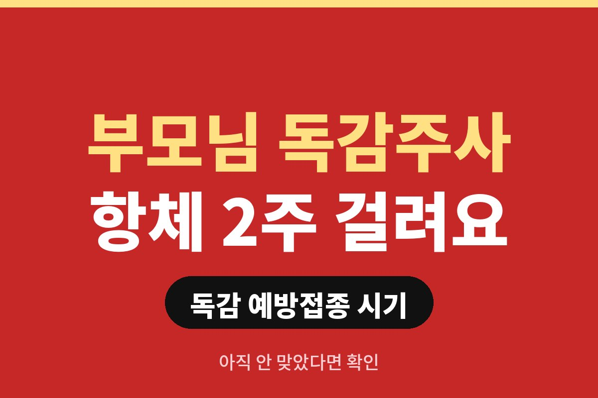

독감 예방접종은 맞고 나서 항체가 생기기까지 보통 약 2주가 걸려서, 유행 전에 미리 맞는 게 핵심입니다. 아직 안 맞았고 65세 이상 부모님이 계신 분이라면, 언제까지 맞아야 안전한지 궁금하시죠?
"나중에 맞지 뭐" 하다가 연말이 되면 병원마다 대기가 길어지기도 하거든요. 그래서 독감 예방접종 시기를 오늘 정리해 드릴게요.
일반적으로 독감 유행 전인 10월에서 12월 사이에 맞는 것을 권장합니다. 접종 후 항체가 충분히 생기는 데 약 2주가 걸리니, 유행이 시작된 뒤에 맞으면 그만큼 무방비 기간이 생기는 셈이죠.
이미 10월 말이라 놓친 것 같아도 늦은 건 아닙니다. 독감은 겨울 내내 이어지기도 해서, 아직 안 맞았다면 지금이라도 맞는 쪽이 낫습니다. 다만 정확한 대상별 일정은 해마다 조금씩 달라서, 보건소나 질병관리청 안내를 꼭 확인하세요.
고령자는 독감에 걸리면 폐렴 같은 합병증으로 이어질 위험이 상대적으로 높다고 알려져 있습니다. 그래서 만 65세 이상은 국가 예방접종 지원 대상으로 무료 접종을 운영하는 것이 일반적이에요.
부모님이 "나는 괜찮다", "작년에도 안 맞았는데 멀쩡했다"고 하시더라도, 자녀가 먼저 날짜를 잡아 모시고 가는 게 가장 확실합니다. 신분증만 챙기면 되는 경우가 많아요. 지원 대상과 기간은 해마다 달라질 수 있으니 가까운 보건소나 지정 의료기관에 먼저 물어보시면 좋습니다.
접종 당일 열이 나거나 몸 상태가 안 좋다면 미루는 게 좋습니다. 이전 접종 때 심한 알레르기 반응이 있었거나 계란 알레르기가 있다면 접종 전에 꼭 의사에게 먼저 말씀해 주세요.
접종 후에는 맞은 부위가 뻐근하거나 미열이 날 수 있는데, 대개 며칠 안에 좋아집니다. 접종 후 20~30분은 병원 근처에서 쉬면서 몸 상태를 살피는 걸 권합니다.
10월 말까지 놓쳤다면 지금이라도 아래 순서대로 챙기면 돼요.
특히 65세 이상 부모님이 계시면 자녀가 먼저 날짜를 잡는 게 결국 가장 확실하더라고요.
많이들 놓치는 부분은 다른 예방접종과의 간격이에요.
최근에 다른 주사를 맞았거나 맞을 예정이라면 접종 전에 의료진에게 꼭 말해 주세요.
알레르기가 있거나 예전에 접종 후 심한 반응이 있었던 분도 미리 알려야 해요.
접종 뒤에는 바로 귀가하지 말고 잠깐 머물며 몸 상태를 확인하는 게 좋아요.
독감 예방접종은 맞는 시기만큼 맞은 뒤 관리도 중요해요.
접종 부위가 붓거나 미열이 잠깐 나는 경우가 있는데, 증상이 오래가면 꼭 진료를 받으셔야 해요.
이유는 간단해요. 미루다 유행이 시작되면 그만큼 무방비 기간이 길어져서 후회하는 경우가 많거든요.
가족이 함께 맞으면 서로 일정을 챙기기 쉬워요.
아이가 있다면 아이 접종 일정도 같은 날 함께 확인해 보세요.
올해 일정은 보건소나 질병관리청 공지에서 가장 정확하게 볼 수 있어요.
부모님께는 전화보다 달력에 날짜를 적어 드리는 게 더 잘 기억되더라고요.
접종을 놓친다고 큰일이 나는 건 아니지만, 항체가 없는 상태로 유행기를 맞게 됩니다. 아이, 임신부, 만성질환자, 고령자는 특히 합병증 위험이 있어서 서두르는 게 좋아요.
정리하면 이렇습니다. 첫째, 이번 주 안에 접종 날짜를 잡으세요. 둘째, 부모님 것부터 먼저 예약하세요. 셋째, 당일 컨디션이 안 좋으면 미루세요. 이 세 가지만 지켜도 겨울이 훨씬 편해집니다.
혹시 올해 독감 주사 맞으셨나요? 아직이라면 오늘 예약 먼저 해보세요. 도움이 되셨다면 구독해 두시면 다음 건강 소식도 놓치지 않으실 거예요.
※ 이 글은 일반적인 건강 정보이며 개인별 진단·처방을 대신하지 않습니다. 접종 가능 여부는 반드시 전문의 상담을 권장합니다.